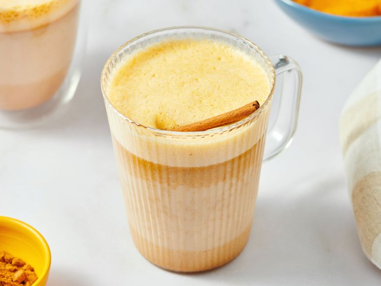

Pumpkin Spice Latte Recipe
Home

Description
A yummy homemade pumpkin spice latte recipe that will forsure make you
not want to go to coffee shop again.
Ingredients:
- 1 cup milk
- 2 tablespoons canned pumpkin purée
- 2 tablespoons white sugar, or to taste
- 1 teaspoon vanilla extract
- ¼ teaspoon pumpkin pie spice
- 1 (1.5 fluid ounce) jigger brewed espresso
Steps:
- Gather all ingredients.
- Whisk milk, pumpkin purée, sugar, vanilla, and pumpkin pie spice
together in a small saucepan; warm over medium heat, whisking
constantly, until hot and frothy.
- Pour brewed espresso into a mug; top with pumpkin spiced milk.
- Enjoy! :p
Nutrition Facts (per serving)
- 244 calories
- 5g fat
- 40g carbs
- 9g Protein
Home